ART PROJECT / Photography
Four Doors。
A study in doorways
Four doorways, one place. Seen together, their differences become as striking as the details they share. Each set offers a small portrait of a place through its entrances.

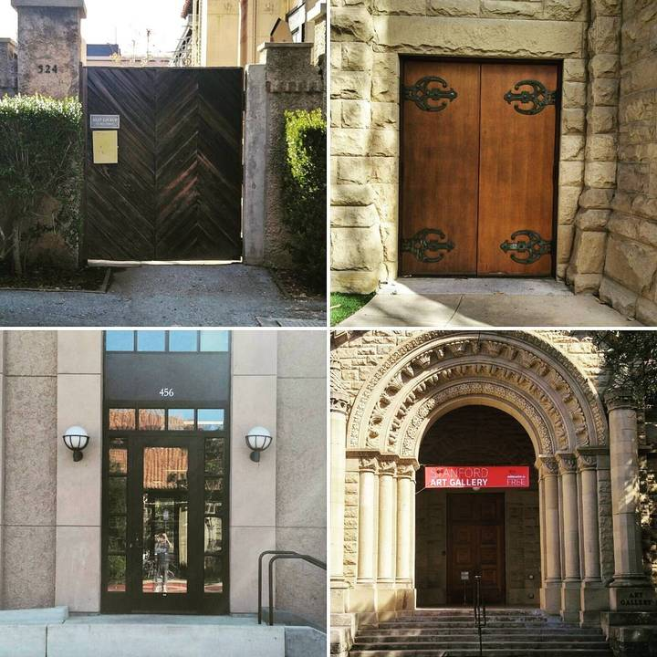
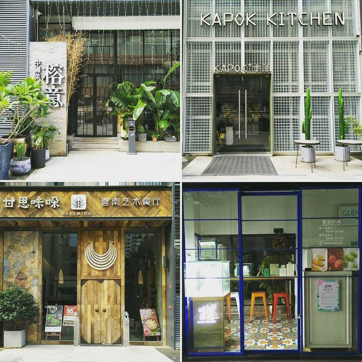
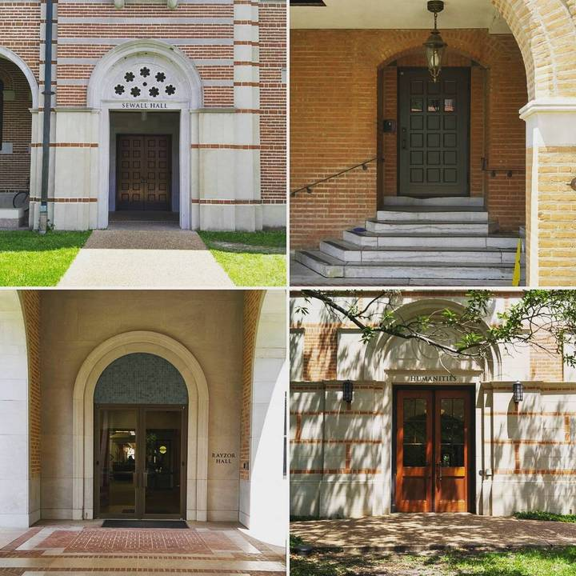
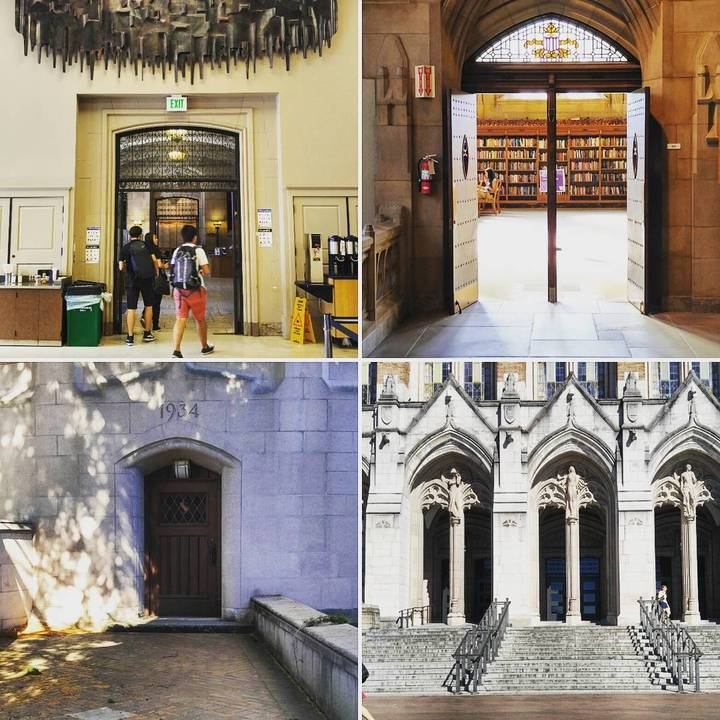
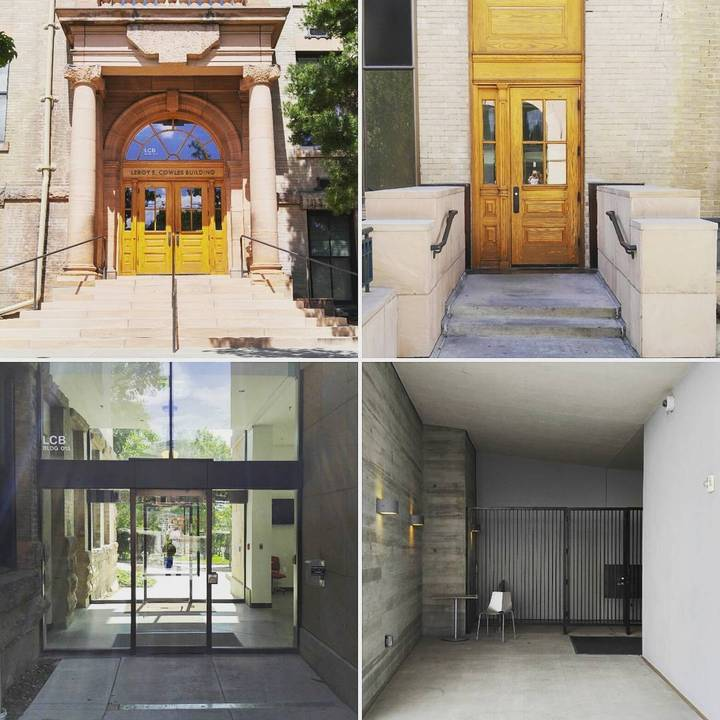
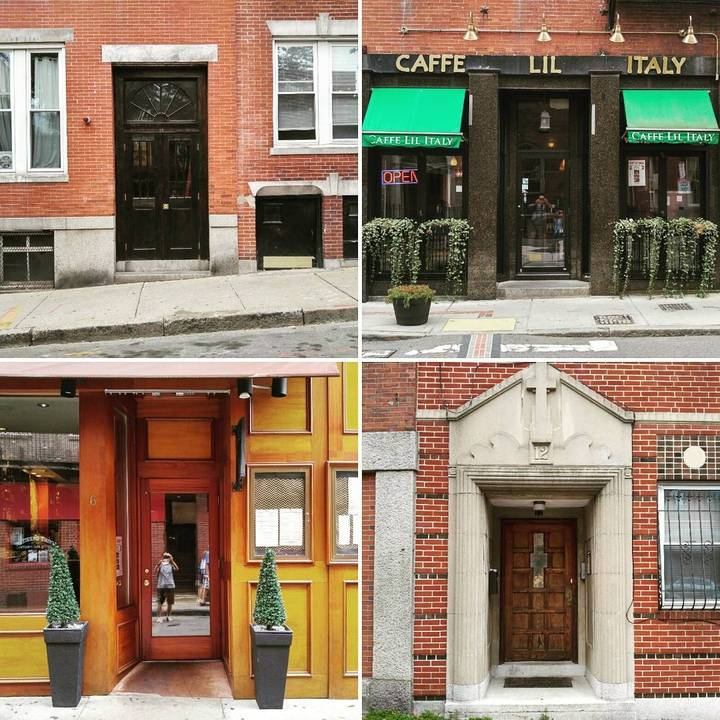
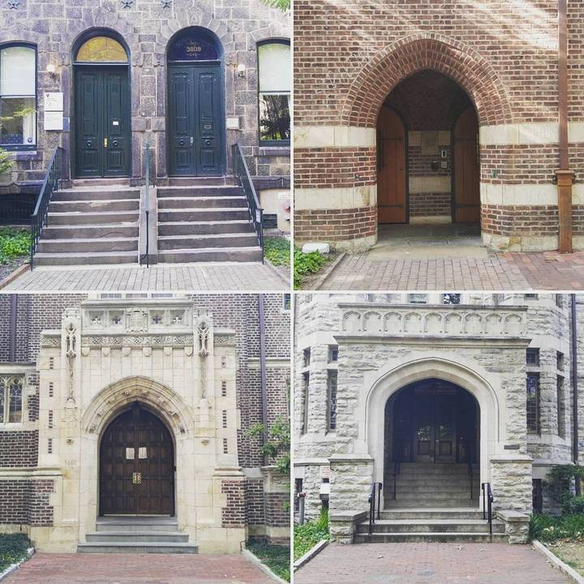
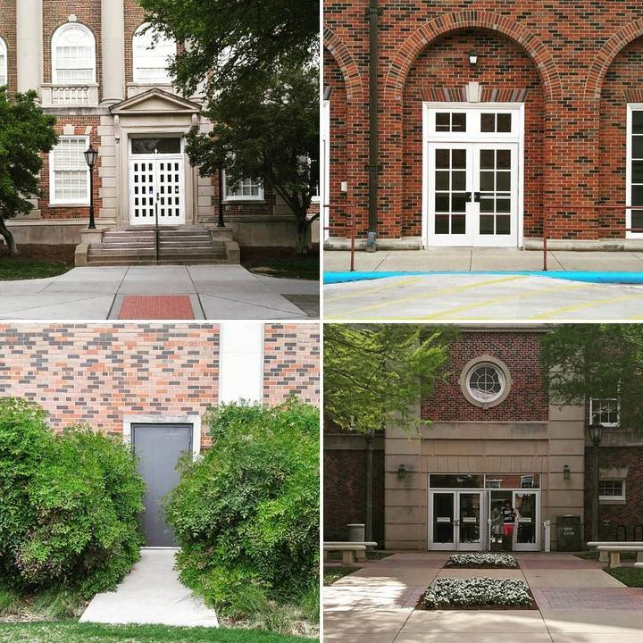
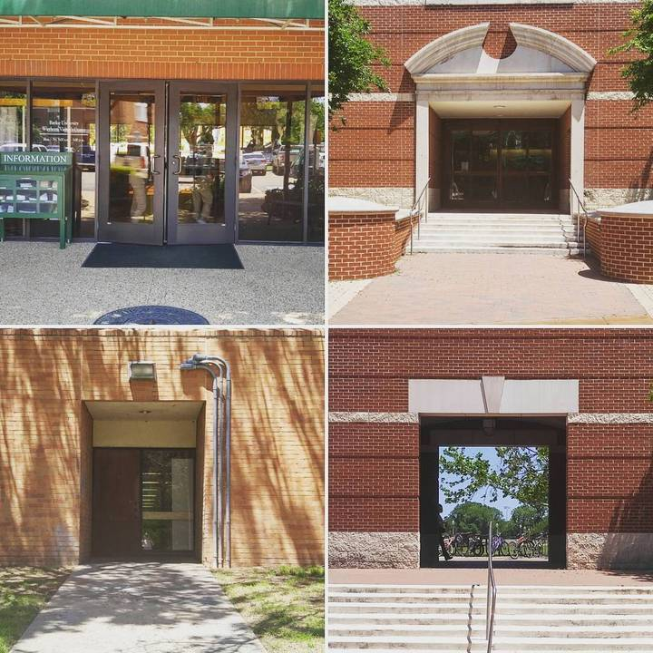
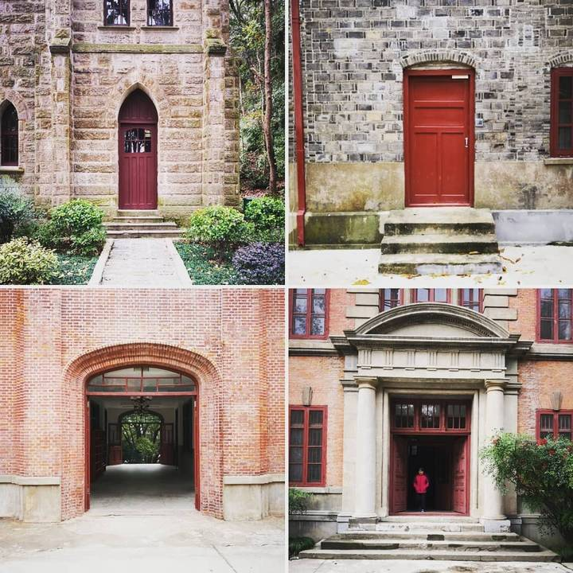
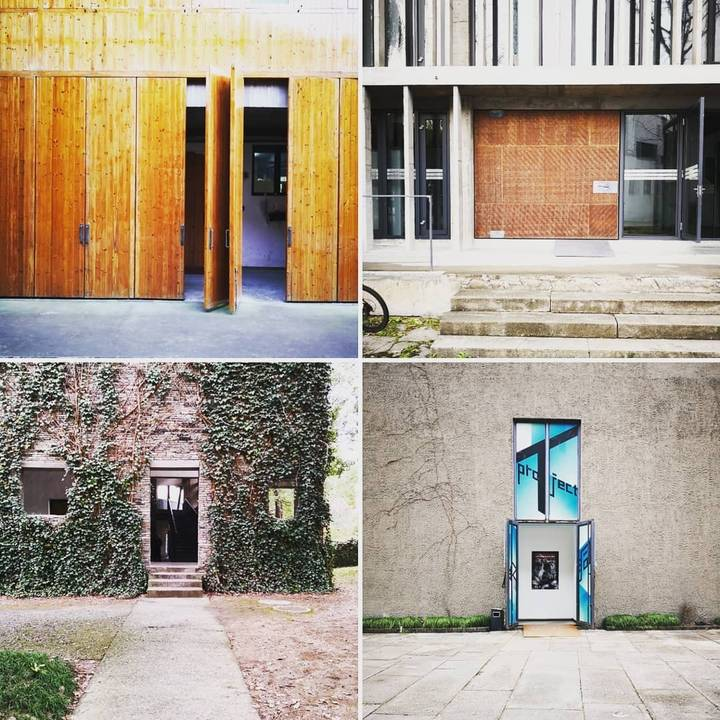
Pause. Take another look.
Explore more art projects